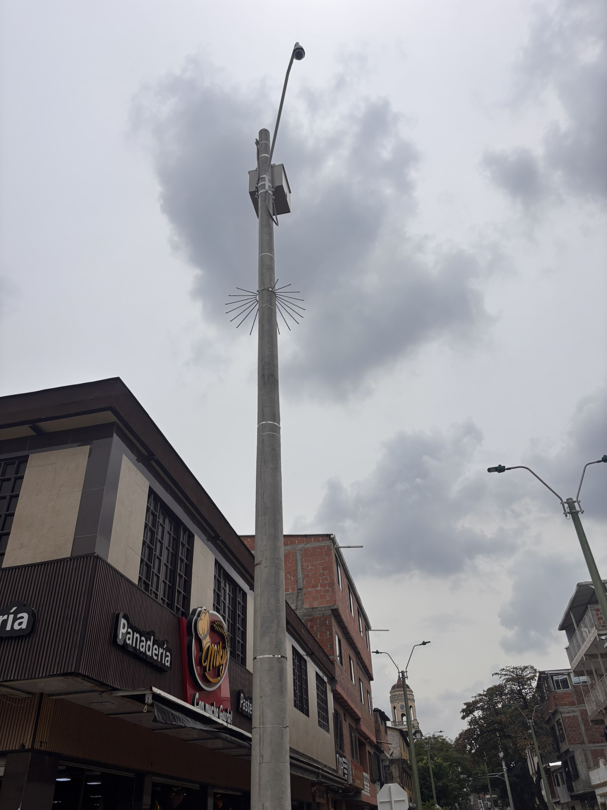
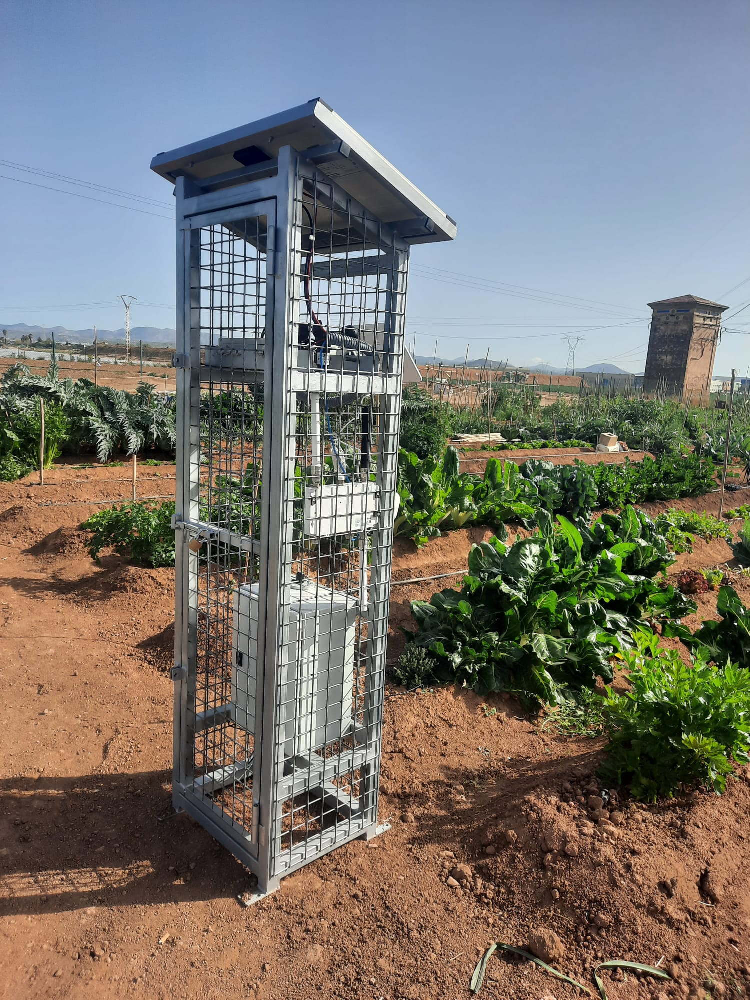
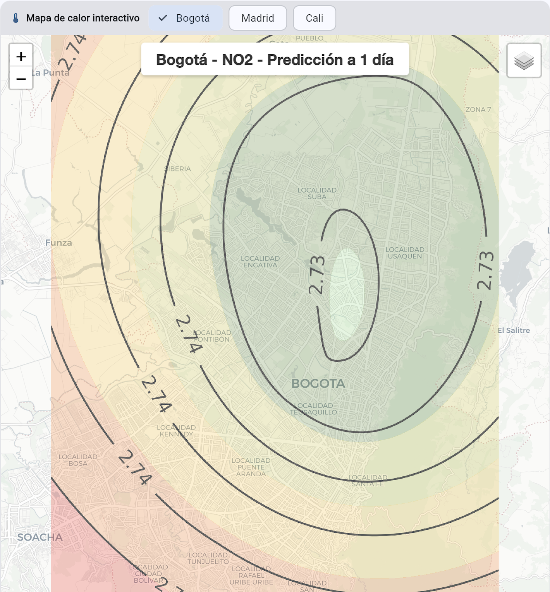

诊断
我们了解影响系统的流程、操作、风险和限制。
Qartia 陪伴公司和机构从项目的技术定义到实际部署，结合传感器、通信、电子、人工智能和系统集成。
该系列针对的是您必须选择技术、设计架构、解决覆盖范围、选择设备并制定可执行路线图的项目。目标是将技术需求转化为与客户运营相一致的可部署、可扩展的解决方案。
我们可以进入早期诊断阶段或完成安装、调试和后续发展的完整旅程。
我们了解影响系统的流程、操作、风险和限制。
我们根据实际用途而不是目录来选择传感器、通信、能源、平台和协议。
我们定义了一个可以分阶段安装、维护和扩展的解决方案。
我们将设计阶段与试点、安装、验证和后续扩展联系起来。
Qartia 帮助做出有关测量内容、如何连接、最佳拓扑以及如何将解决方案与客户操作集成的决策。
当项目需要时，Qartia 从定义到执行：电子、集成、专用网络、安装、仪表板以及实际条件下解决方案的验证。


目标、变量、限制和技术可交付成果的明确定义。
从一开始就阶段、优先级、试点、扩展和验证标准。
LoRa、DECT NR+、5G、以太网和混合架构，具体取决于用例。
传感器、电子设备、电源、机械保护和现场面板。
数据库、可视化、警报以及与现有系统的共存。
规则、模型和高级开发使数据产生真正的影响。
系统设计的架构、范围、优先级和可追溯性。
能够在不失去技术一致性的情况下从研究或试点转向部署。
运营目标、变量、环境条件和成功指标。
技术、覆盖范围、设备、集成和部署阶段。
真实测试、微调、数据质量和操作适合性检查。
调试、分阶段部署及后续技术支持。
Qartia 可以帮助您定义正确的架构，如果您需要的话，可以将其用于试点、部署和实际操作。
